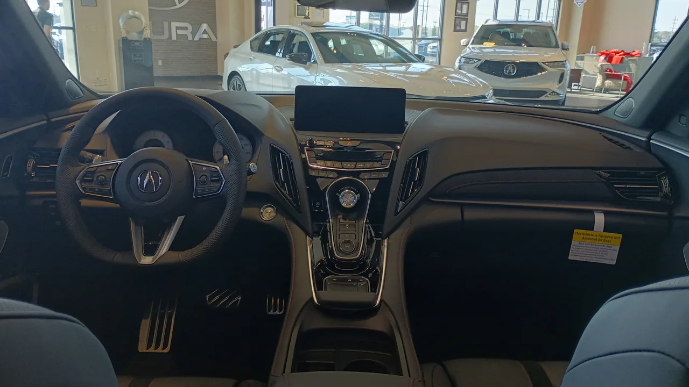

▲ 혼다 CR-V 하이브리드. 전기차 전용 공장이 가솔린·하이브리드 생산으로 전환된다
혼다가 출시를 코앞에 둔 전기차 세 종을 폐기했습니다. 개발이 끝났고, 생산할 공장까지 정해져 있던 차들입니다.
대가는 컸습니다. 총 손실 157억 달러, 우리 돈 약 15조7,000억 원입니다. 그리고 혼다는 1957년 도쿄증권거래소 상장 이후 처음으로 순손실을 기록했습니다. 69년 만입니다.
1. 무엇을 버렸나
폐기된 차는 혼다 0 살롱(세단), 혼다 0 SUV, 그리고 아큐라 브랜드의 RSX입니다. 세 대 모두 오하이오주 메리즈빌에 마련된 혼다 EV 허브에서 생산될 예정이었습니다.
'0 시리즈'는 혼다가 전동화 시대를 겨냥해 새로 만든 전용 라인업입니다. 콘셉트 단계부터 공을 들여 공개해온 프로젝트였고, 아큐라 RSX는 프리미엄 브랜드의 전동화 첫 주자로 준비된 모델이었습니다.
자동차 개발에서 양산 직전 단계의 취소는 가장 비싼 실패입니다. 설계와 검증, 금형 제작, 부품 공급 계약, 공장 설비까지 대부분의 비용이 이미 집행된 뒤이기 때문입니다. 157억 달러라는 손실 규모는 이 단계가 얼마나 늦었는지를 보여줍니다.

▲ 아큐라 RDX. 신형에는 V6 듀얼모터 하이브리드가 적용될 예정이다
2. 이유는 배터리였다
가장 직접적인 폐기 사유는 배터리였습니다. 혼다가 GM과 협력해 개발한 리튬이온 배터리 기술이 이미 구식이 됐고, 현재 계획대로 모델을 생산할 수 없는 상태가 됐다는 것입니다.
이 대목이 이번 사안의 핵심입니다. 전기차 개발에는 통상 4~5년이 걸립니다. 그런데 배터리 기술은 그보다 빠르게 움직였습니다. 개발을 시작할 때 최신이던 셀이, 출시 시점에는 경쟁사 신차보다 뒤처지는 상황이 벌어진 것입니다.
실제로 최근 몇 년 사이 배터리 진화 속도는 가팔랐습니다. 앞서 다룬 것처럼 BYD는 2세대 블레이드 배터리로 10→97% 충전을 9분에 끝내는 수준까지 왔고, 전고체 배터리 특허도 잇따라 공개하고 있습니다.
혼다 입장에서는 구형 배터리를 얹은 신차를 내놓아 손해를 길게 볼 것이냐, 지금 접고 손실을 한 번에 털 것이냐의 선택이었습니다. 후자를 골랐고, 그 대가가 157억 달러였습니다.
3. 밖에서도 상황이 나빠졌다
배터리만이 이유는 아닙니다. 외부 조건이 동시에 무너졌습니다.
가장 큰 것은 미국 EV 세액공제 폐지입니다. 최대 7,500달러 혜택이 2025년 9월 30일 사라지면서 미국 전기차 수요가 급감했습니다. 실제로 그 이후 1년간 미국 순수 전기차 점유율은 12%에서 6%로 반토막 났습니다.
혼다의 0 시리즈는 미국 시장을 주 타깃으로 설계된 차였습니다. 그 시장의 수요 전제가 무너졌으니 사업 계획 자체가 성립하지 않게 됐습니다. 여기에 북미·캐나다로 생산을 옮기는 과정의 비용 상승까지 겹쳤습니다.
정리하면 제품 경쟁력(배터리)과 시장 수요(세액공제)가 동시에 무너진 상황이었습니다. 둘 중 하나만 문제였다면 계획을 조정하는 선에서 끝났을 수 있습니다.

▲ 혼다는 전기차 대신 하이브리드 라인업 강화로 방향을 틀었다
4. 방향 전환 — 전기차 공장에서 하이브리드를 만든다
혼다가 택한 다음 수는 두 갈래입니다.
단기적으로는 하이브리드입니다. 전기차 생산을 위해 준비한 EV 허브를 가솔린·하이브리드 차량 생산으로 전환합니다. 신형 아큐라 RDX에는 V6 듀얼모터 하이브리드 시스템이 적용될 예정이고, 하이브리드 전용으로 엘리먼트를 부활시키는 계획도 나왔습니다.
이 판단에는 근거가 있습니다. 미국에서 전기차가 빠진 자리를 채운 것이 바로 하이브리드였습니다. 하이브리드 점유율은 16%로 역대 최고를 기록했습니다. 그리고 하이브리드는 혼다가 가장 오래, 가장 잘해온 분야입니다.
장기적으로는 전고체 배터리입니다. 혼다는 퀀텀스케이프와 협력해 고체 리튬-금속 배터리를 개발하고 있습니다. 지금 세대의 리튬이온으로는 경쟁이 안 된다고 판단했다면, 한 세대를 건너뛰겠다는 전략으로 읽힙니다.
다만 이 전략에는 공백기가 따릅니다. 전고체가 양산되기까지 몇 년간 혼다는 경쟁력 있는 순수 전기차 없이 버텨야 합니다. 그 기간을 하이브리드로 메우겠다는 것이 이번 결정의 전체 그림입니다.

▲ 혼다는 올해 말 한국 자동차 판매를 종료한다
5. 한국 철수와 같은 뿌리다
혼다코리아는 올해 말 국내 자동차 판매를 종료합니다. 2003년 진출 이후 23년 만입니다. 올 1~7월 국내 판매는 410대로 전년 대비 68.4% 줄었습니다.
이 두 소식은 따로 나왔지만 뿌리가 같습니다. 한국에서의 부진은 국내 사정만의 문제가 아니라, 혼다가 전동화 전환기에 내놓을 상품이 마땅치 않았다는 글로벌 상황의 한 단면이었습니다. 순수 전기차 라인업이 약했고, 하이브리드는 국산차보다 비쌌으며, 프리미엄 포지션도 아니었습니다.
바꿔 말하면 이번 157억 달러 손실은 한국 철수를 설명하는 배경이기도 합니다. 본사가 69년 만에 적자를 낼 만큼 흔들리는 상황에서, 판매가 부진한 개별 시장을 정리하는 것은 자연스러운 수순입니다.
6. 정리 — 전동화 전환의 청구서
정리하면 혼다는 다 만든 전기차 세 대를 버리고, 69년 만에 첫 적자를 감수하고, 전기차 공장을 하이브리드 공장으로 바꿨습니다. 이유는 배터리가 구식이 됐고 미국 수요가 사라졌기 때문입니다.
이 사례가 남기는 것은 전동화 전환의 속도 문제입니다. 늦게 시작하면 뒤처지지만, 서둘러 시작해도 개발 기간 중에 기술이 바뀌면 같은 결과가 나옵니다. 혼다는 후자를 겪었습니다.
같은 고민은 다른 제조사에도 있습니다. 제네시스가 전 차종 전동화 계획을 사실상 조정하고 하이브리드를 다시 꺼내 든 것도 비슷한 맥락 위에 있습니다. 다만 혼다처럼 양산 직전에 접는 방식은 대가가 가장 비쌉니다.
전고체 배터리가 혼다의 계획대로 나올지, 그때까지 하이브리드로 버틸 수 있을지는 아직 확인되지 않았습니다. 다만 이번 결정으로 혼다가 순수 전기차 경쟁에서 한 라운드를 건너뛰겠다고 선언한 것은 분명합니다.